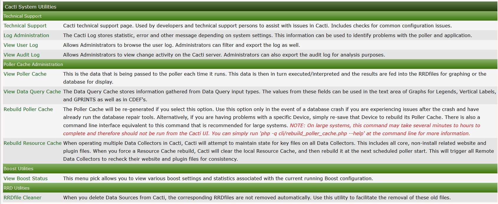

This section will describe System Utilities in Cacti.
The system utilities page in cacti contains tools used for administering cacti from this page you can do the following
Rebuild poller cache.
View technical support information.
Adjust log settings.
View the user log for audits.
.
Some of the most important tools are listed below
The Poller Cache will be re-generated if you select this option. Use this option only in the event of a database crash if you are experiencing issues after the crash and have already run the database repair tools. Alternatively, if you are having problems with a specific Device, simply re-save that Device to rebuild its Poller Cache. There is also a command line interface equivalent to this command that is recommended for large systems. NOTE: On large systems, this command may take several minutes to hours to complete and therefore should not be run from the Cacti UI. You can simply run 'php -q cli/rebuild_poller_cache.php --help' at the command line for more information.
Cacti technical support page. Used by developers and technical support persons to assist with issues in Cacti. Includes checks for common configuration issues.
When you delete Data Sources from Cacti, the corresponding RRDfiles are not removed automatically. Use this utility to facilitate the removal of these old files.
Copyright (c) 2004-2020 The Cacti Group